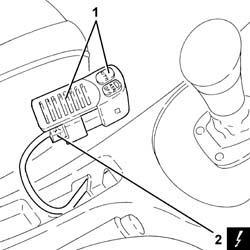
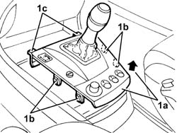
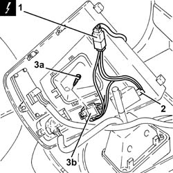

2127E30 auto function selection key of hydraulic gearbox r r
- Path
- Procedures > 21 GEARBOX > 2127 ELECTRO-HYDRAULIC SELECTION. GEARBOX EXTERNAL. CONTROLS > 2127E electric speed selection system > 2127E30 auto function selection key of hydraulic gearbox r r
- Kind
- repair procedure (removal / refitting; the operation number is the code)
- Applies to
- engines: 2.0 TS, 3.2 V6; all production periods
- Interactive page
- https://sloeber94.github.io/elrnDB-a147/en/#/3025153
Applies to: engines: 2.0 TS; all production periods; only with equipment: Cambio robotizzato
 Removing
Removing
 Refitting
RefittingEnsure that the ignition key is in the OFF postition, then disconnect the battery negative terminal.
 | Name | Connector |
|---|---|---|
- | Battery |
1. Remove the trim, complete with CITY function selector button and A.S.R. off switch, from the housing in the centre console.
2. Disconnect the electrical connection for the CITY function selector button.
| Name | Connector |
|---|---|---|
2 | Switches on tunnel |
Remove the trim, complete with CITY function selector button and A.S.R. off switch.

Applies to: engines: 2.0 TS; all production periods; only with equipment: Cambio robotizzato
Refitting
RemovingConnect the electrical connection to the CITY function selector button.
Place the trim, complete with CITY function selector button and A.S.R. off switch, back in its housing.
Connect the battery terminal (-).
Applies to: engines: 3.2 V6; all production periods; only with equipment: Cambio robotizzato
Removing
RefittingEnsure that the ignition key is in the OFF position, then disconnect the negative battery terminal (-).
| Name | Connector |
|---|---|---|
- | Battery |
1. Lift up the rear part (1a) of the surround and release the retainers (1b) and then (1c).

Applies to: engines: 3.2 V6; all production periods; only with equipment: Cambio robotizzato
Loosen the band, then release the gear lever grip from the lever.
1. Disconnect the electrical connection for the electro-hydraulic gear selection city function selection switch.
| Name | Connector |
|---|---|---|
1 | Data not available yet | H39 |
2. Release the gear position light bulb.
3. Undo the bolts (3a) and remove the electro-hydraulic gear selection city function selection switch (3b), complete with wiring and bulb.

Applies to: engines: 3.2 V6; all production periods; only with equipment: Cambio robotizzato
Refitting
RemovingFit the electro-hydraulic gear selection city function selection switch, complete with wiring and bulb, and fix it using the bolts.
Fit the gear position light bulb back in its housing.
Connect the electro-hydraulic gear selection city function selection switch electrical connection.
Refit the gear lever grip on the lever and tighten the band.
Place the gear lever surround back in its housing.